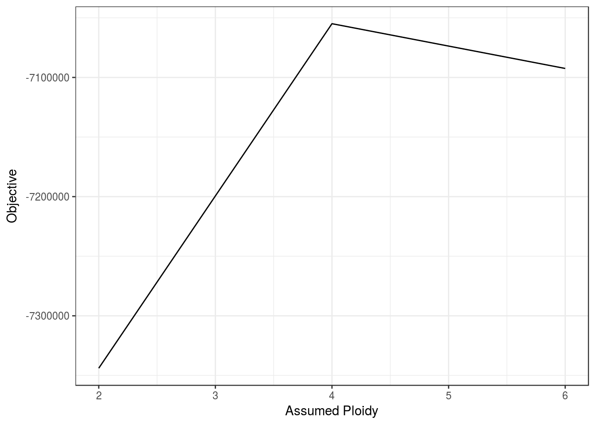
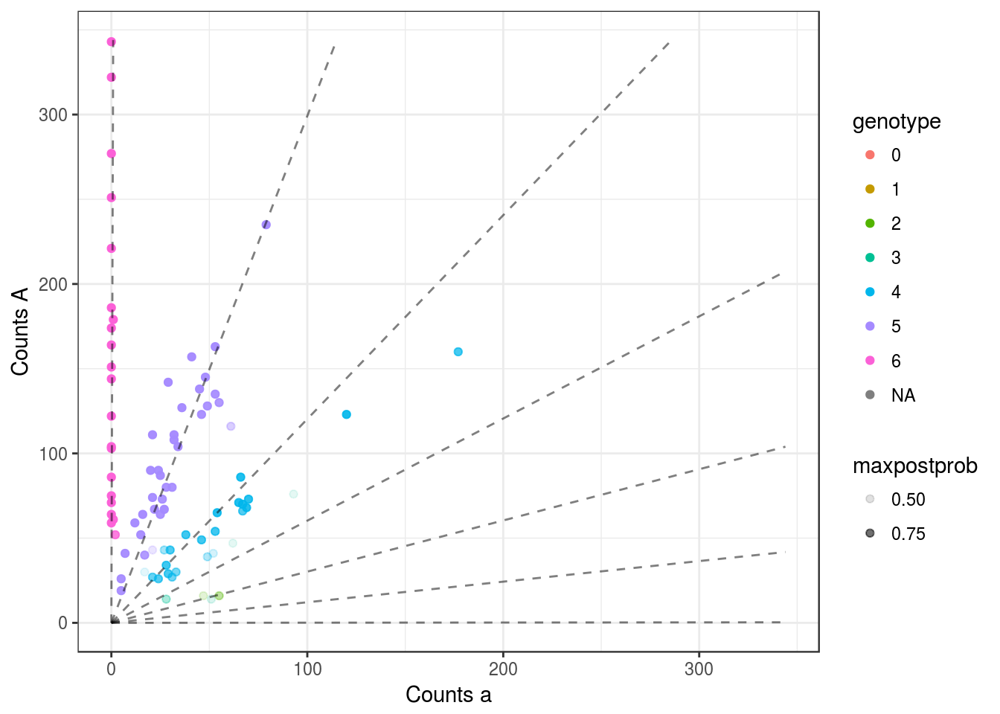
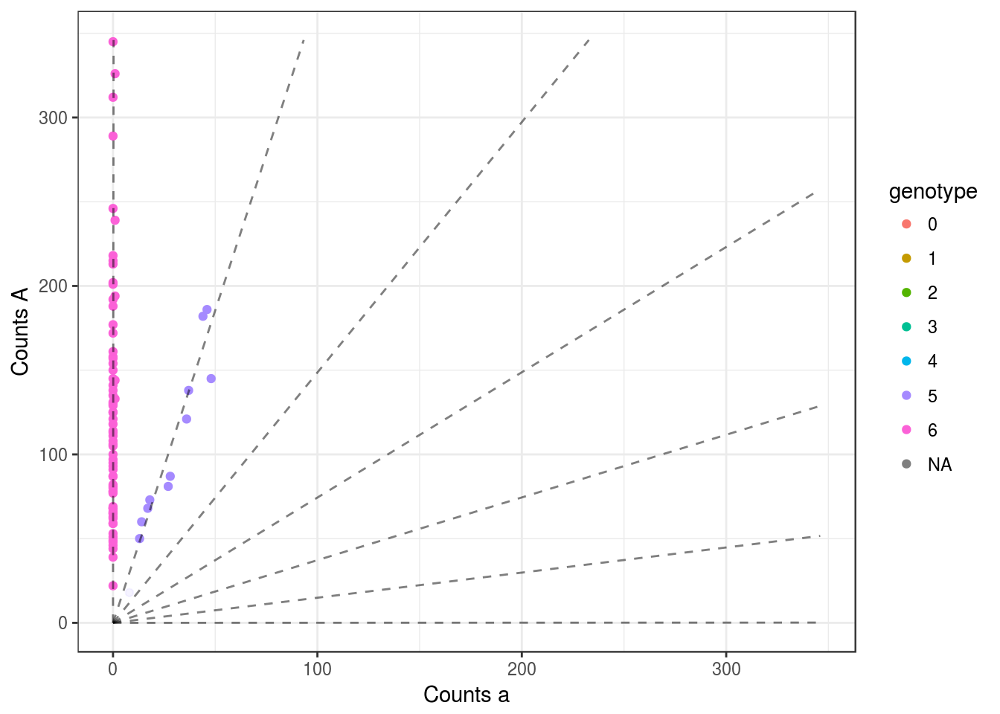
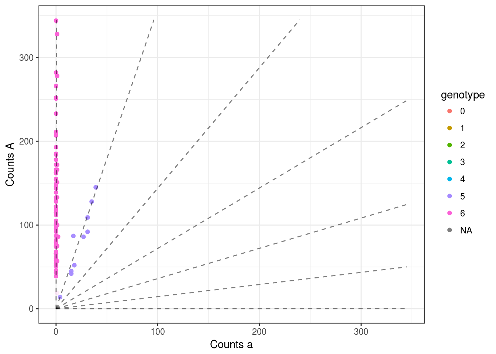
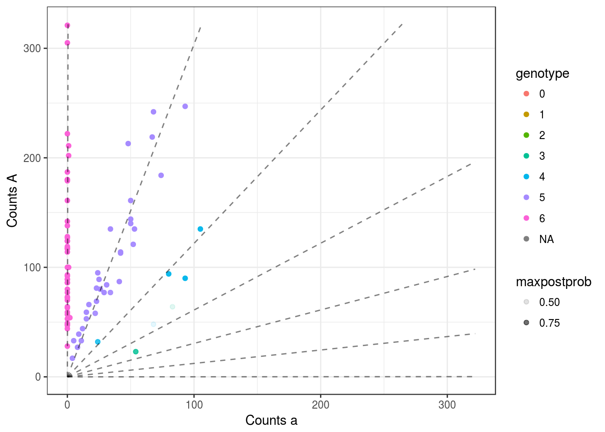
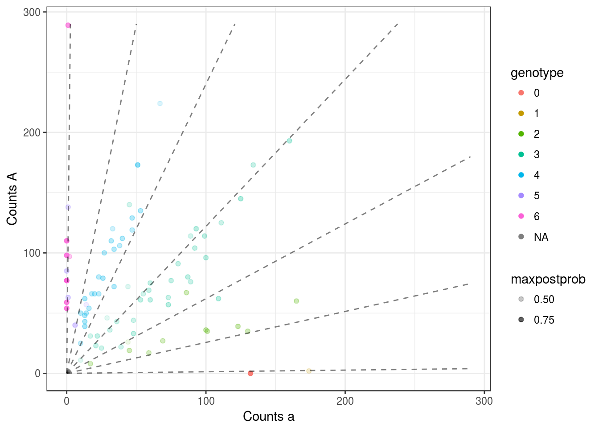
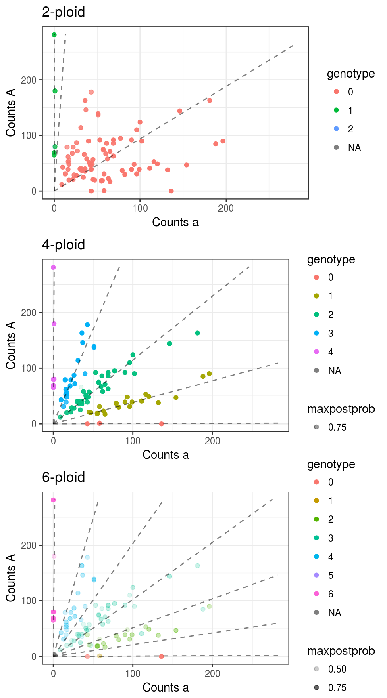
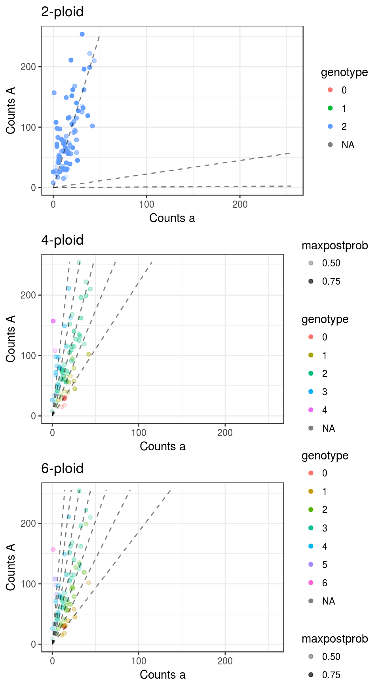
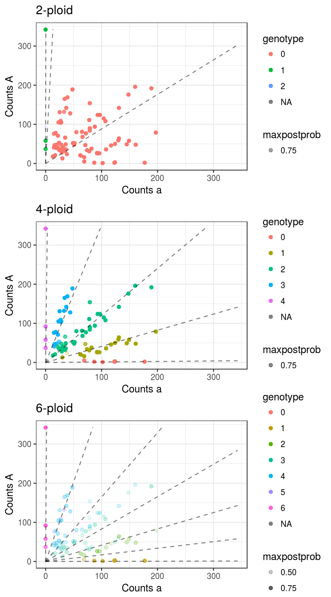
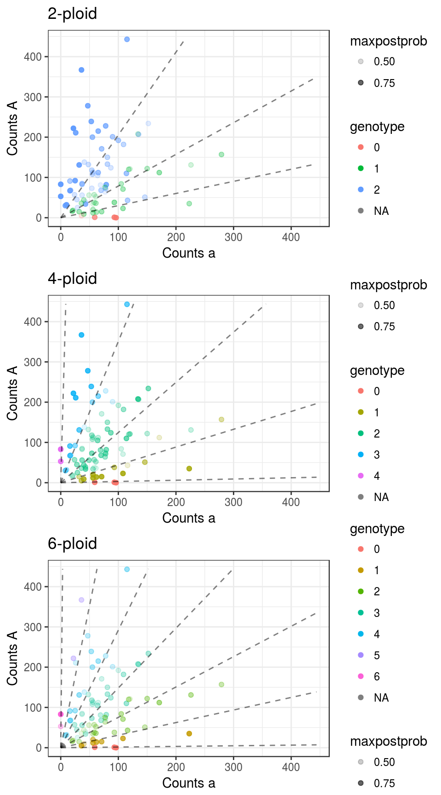

uitdewilligen
David Gerard
December 20, 2017
Abstract
I try out mupdog on the data from
Uitdewilligen, Jan GAML, et al. “A next-generation sequencing method for genotyping-by-sequencing of highly heterozygous autotetraploid potato.” PLoS One 8.5 (2013): e62355.
Which may be obtained here:
https://doi.org/10.1371/journal.pone.0062355
Here, I assume the individuals are hexaploid. I want to compare the objective functions.
Run mupdog
library(mupdog)
library(updog)
library(tidyverse)## Loading tidyverse: ggplot2
## Loading tidyverse: tibble
## Loading tidyverse: tidyr
## Loading tidyverse: readr
## Loading tidyverse: purrr
## Loading tidyverse: dplyr## Conflicts with tidy packages ----------------------------------------------## filter(): dplyr, stats
## lag(): dplyr, statsinlist <- readRDS("../data/uitdewilligen_snps.RDS")
refmat <- inlist$refmat
sizemat <- inlist$sizemat
ploidy <- 6 ## major difference here.mout <- mupdog(refmat = refmat, sizemat = sizemat, ploidy = ploidy, verbose = TRUE, num_clust = 7,
control = list(obj_tol = 10^-5, itermax = 200))
saveRDS(mout, "../output/uit_fit/fit_uit_6ploid.RDS")Analyze Output
Fits assuming diploidy was done here and fits (correctly) assuming tetraploidy was done here
mout2 <- readRDS("../output/uit_fit/fit_uit_2ploid.RDS")
mout4 <- readRDS("../output/uit_fit/fit_uit1.RDS")
mout6 <- readRDS("../output/uit_fit/fit_uit_6ploid.RDS")The tetraploid objective is higher. So this is good.
y <- c(mout2$obj, mout4$obj, mout6$obj)
x <- c(2, 4, 6)
qplot(x, y, geom = "line", xlab = "Assumed Ploidy", ylab = "Objective") + theme_bw()
See some hexaploid fits
for (index in 10001:10005) {
pl <- plot(mout6, index)
print(pl)
}
My guess is that mispecifying the ploidy will have the biggest affect on SNPs will allele frequencies close to 0.5. This is mostly true, except for the SNPs that would have been removed based on filters.
library(gridExtra)##
## Attaching package: 'gridExtra'## The following object is masked from 'package:dplyr':
##
## combinewhich_indices <- order((mout4$allele_freq - 0.5) ^ 2, decreasing = FALSE)[1:5]
for (i in 1:length(which_indices)) {
cat("index", i, "\n")
pl2 <- plot(mout2, which_indices[i]) + ggtitle("2-ploid")
pl4 <- plot(mout4, which_indices[i]) + ggtitle("4-ploid")
pl6 <- plot(mout6, which_indices[i]) + ggtitle("6-ploid")
grid.arrange(pl2, pl4, pl6)
cat("\n\n")
}## index 1
##
##
## index 2
##
##
## index 3
##
##
## index 4
##
##
## index 5
sessionInfo()## R version 3.3.2 (2016-10-31)
## Platform: x86_64-pc-linux-gnu (64-bit)
## Running under: Ubuntu 16.04.3 LTS
##
## locale:
## [1] LC_CTYPE=en_US.UTF-8 LC_NUMERIC=C
## [3] LC_TIME=en_US.UTF-8 LC_COLLATE=en_US.UTF-8
## [5] LC_MONETARY=en_US.UTF-8 LC_MESSAGES=en_US.UTF-8
## [7] LC_PAPER=en_US.UTF-8 LC_NAME=C
## [9] LC_ADDRESS=C LC_TELEPHONE=C
## [11] LC_MEASUREMENT=en_US.UTF-8 LC_IDENTIFICATION=C
##
## attached base packages:
## [1] stats graphics grDevices utils datasets methods base
##
## other attached packages:
## [1] gridExtra_2.2.1 dplyr_0.7.4 purrr_0.2.4
## [4] readr_1.0.0 tidyr_0.7.2 tibble_1.3.4
## [7] ggplot2_2.2.1 tidyverse_1.1.1 updog_0.1.0
## [10] mupdog_0.0.0.9000
##
## loaded via a namespace (and not attached):
## [1] Rcpp_0.12.14 plyr_1.8.4 bindr_0.1 forcats_0.2.0
## [5] iterators_1.0.9 tools_3.3.2 digest_0.6.13 lubridate_1.6.0
## [9] jsonlite_1.5 evaluate_0.10.1 nlme_3.1-131 gtable_0.2.0
## [13] lattice_0.20-34 pkgconfig_2.0.1 rlang_0.1.4 psych_1.6.12
## [17] foreach_1.4.4 yaml_2.1.16 parallel_3.3.2 haven_1.0.0
## [21] bindrcpp_0.2 xml2_1.1.1 httr_1.3.1 stringr_1.2.0
## [25] knitr_1.17 hms_0.3 rprojroot_1.2 grid_3.3.2
## [29] glue_1.2.0 R6_2.2.2 readxl_0.1.1 foreign_0.8-67
## [33] rmarkdown_1.6 modelr_0.1.0 reshape2_1.4.2 magrittr_1.5
## [37] ggthemes_3.4.0 scales_0.4.1 backports_1.0.5 codetools_0.2-15
## [41] htmltools_0.3.6 rvest_0.3.2 assertthat_0.2.0 mnormt_1.5-5
## [45] colorspace_1.3-2 labeling_0.3 stringi_1.1.6 lazyeval_0.2.0
## [49] munsell_0.4.3 broom_0.4.2This R Markdown site was created with workflowr